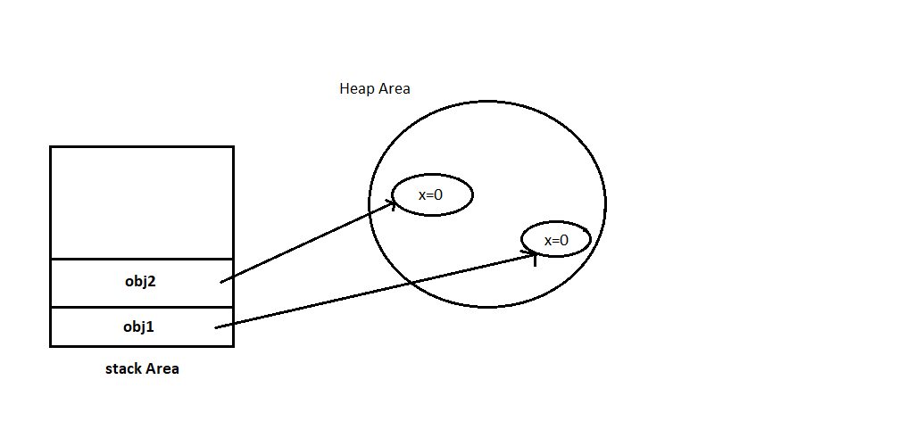

All non-static variable or methods are called instance members
A class can have following instance members.
Instance variable are declared in a class, but outside a method.
Instance variables has default values
for number :- 0
for Boolean :- false
for String :- null
class Demo {
int x;
public static void main(String[] args) {
Demo obj1 = new Demo();
Demo obj2 = new Demo();
}
}
There will be separate copy of x created for all of demo class.
